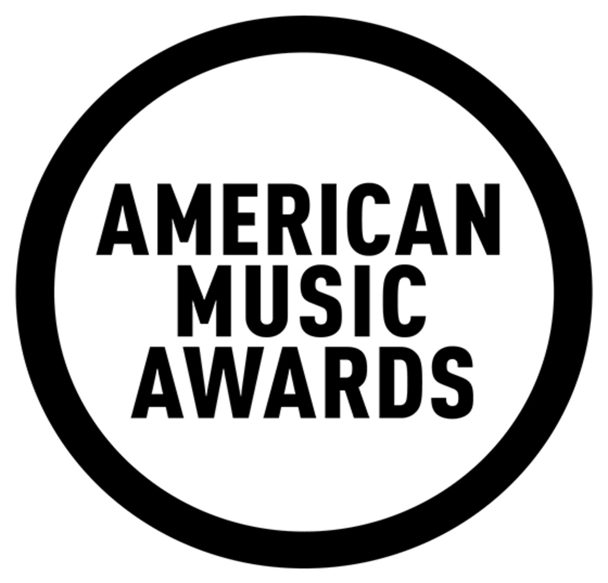

WORLD MUSIC AWARDS
Премия Grammy была учреждена Ассоциацией звукозаписывающих компаний США в 1958 году.
Идея ее создания родилась у профессиональных музыкантов в Лос-Анджелесе в 1957 году,
когда отмечался 80-летний юбилей изобретения граммофона Томасом Эдисоном. Отсюда и
название “Грэмми” и форма призовой статуэтки (позолоченный граммофончик).
Первое вручение премии “Грэмми” состоялось в 1958 году. Церемонию открывал Фрэнк Синатра,
впоследствии дважды удостоенный этой награды. С тех пор прошло еще 48 торжественных церемоний.
Ныне эта премия является самой престижной из всех музыкальных премий мира. За право
проводить у себя церемонию традиционно борются Лос-Анджелес и Нью-Йорк.
«Грэмми» – предмет национальной гордости Соединенных Штатов. Она отмечает
достижения музыкантов, певцов и композиторов, работающих в самых разнообразных музыкальных
стилях, и присуждается по решению почти 20 тысяч членов Национальной Академии Звукозаписи
США вне зависимости от коммерческого успеха и места, занимаемого данным произведением или
исполнителем в хит-парадах , то есть оценивается чистое искусство.
Победители иногда более чем в ста номинациях выявляются членами академии в результате
тайного голосования. Премия вручается за высшие достижения по итогам прошедшего года – музыкантам,
певцам, композиторам, аранжировщикам, продюсерам, звукоинженерам, техникам, режиссерам и так далее.
BRIT Awards - ежегодная премия британской
фонографической индустрии в области популярной музыки. Первоначально название было
сокращенной формой "British", "Britain" или "Britannia" (в первые дни премии спонсировались
Britannia Music Club), но впоследствии стало синонимом шоу British Record Industry Trusts.
Премия была впервые проведена в 1977 году и возникла как
ежегодное мероприятие в 1982 году под эгидой британской торговой ассоциации
звукозаписывающей индустрии, BPI. В 1989 году они были переименованы в BRIT Awards.
Mastercard является долгосрочным спонсором мероприятия.
Церемония вручения самых престижных музыкальных наград в Великобритании, BRIT Awards,
включает в себя некоторые из самых заметных событий в британской популярной культуре, такие как
последнее публичное выступление Фредди Меркьюри, протест Джарвиса Кокера против Майкла Джексона и
участница группы "Чумбавамба", вылившая
ведро ледяной воды на тогдашнего заместителя премьер-министра Джона Прескотта. Эти
моменты имели место в 1990-х годах, когда церемония имела репутацию "немного сумасбродной,
непредсказуемой и временами анархичной".
На статуэтке BRIT Award, вручаемой победителям, изображена Британия.
С 2011 года статуэтка регулярно обновлялась некоторыми из самых известных
британских дизайнеров, стилистов и художников. Также есть и рекордсмены по количеству заветных статуэток.
Самое большое количество наград BRIT Awards у Робби Уильямса: 13 в
качестве сольного исполнителя и еще пять в составе Take That.
Премия MTV Europe Music Award (первоначально называвшаяся Европейская музыкальная премия
MTV, обычно сокращенно MTV EMA ) - награда, вручаемая Viacom International Media Networks
в честь артистов и музыкантов поп-культуры. Первоначально он был задуман как альтернатива
MTV Video Music Awards, которая ежегодно проводится в Соединенных Штатах. Europe Music
Awards проводится ежегодно в разных странах; он проводился в основном в Соединенном
Королевстве. Ежегодная церемония вручения включает выступления известных артистов и вручение
тех наград, которые вызывают больший интерес.
Награды являются отражением международной и континентальной музыкальной сцены. Они являются
представителями географического происхождения и достижений в различных музыкальных жанрах
и дисциплинах, что свидетельствует о разнообразии и масштабах шоу. Начиная с церемонии 2007
года, зрители могут голосовать за своих любимых артистов во всех общих категориях, посетив веб-сайт MTV.
Церемония 1st Europe Music Awards проводилась в 1994 году в Бранденбурге. Ворота в Берлине, Германия, через
пять лет после падения Берлинской стены. Ежегодная церемония транслировалась в прямом эфире MTV Europe, Channel
5 и на большинстве международных каналов MTV, а также в Интернете.

American Music Awards
The American Music Awards (AMAs) — ежегодная американская музыкальная премия, созданная в
1973 году Диком Кларком для телевизионной сети ABC, когда у тех закончился контракт на
трансляцию «Грэмми». В отличие от «Грэмми», где лауреатов выбирают на основании голосов
членов Национальной академии искусства и науки звукозаписи, AMAs выбирает их путём опроса
общественности и фанатов, голосующих на официальном сайте премии. Статуэтка премии
изготовлена нью-йоркским предприятием Society Awards
Организаторы AMA всегда уделяют значительное внимание выбору ведущего: по состоянию на 2008 год, ведущим
премии три года подряд был телеведущий и комик Джимми Киммел. Следующие три церемонии проводились без
ведущих; данный приём был позаимствован у «Грэмми», когда в течение церемонии выступали различные
знаменитости. Тем не менее, в 2013—2014 гг. ведущим был рэп-исполнитель Pitbull; в 2015 году церемонию
вела певица и актриса Дженнифер Лопез, в 2016 году — модель Джиджи Хадид и комик Джей Фарроа;
в 2017 году — актриса Трейси Эллис Росс.